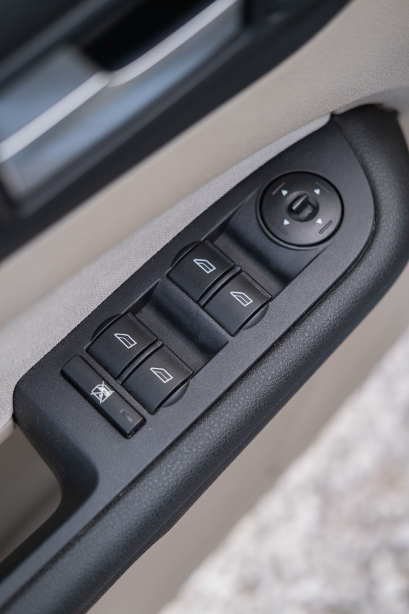
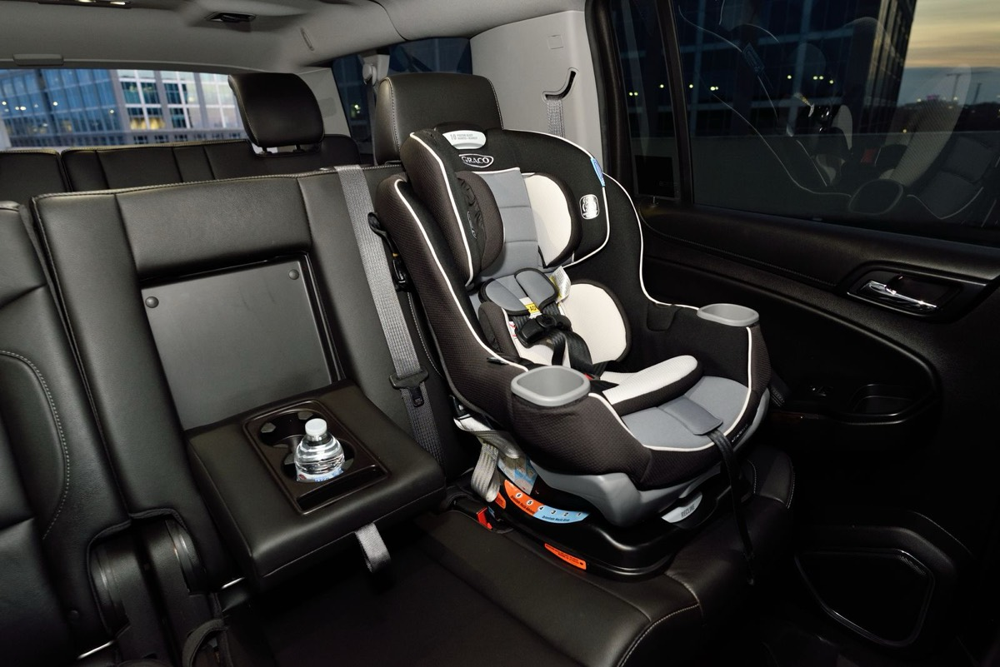
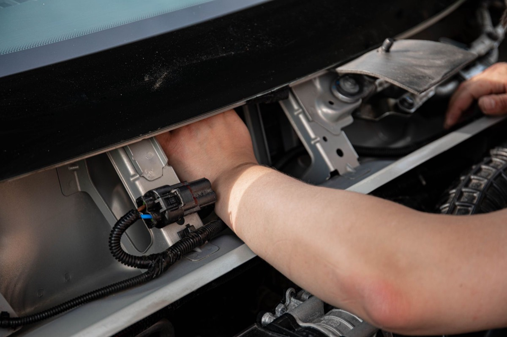

Why Only One Window Goes Up By Itself, and What You Can Do
Almost every truck sold in the last twenty years will drop all four windows on one press of the driver's switch. Only the driver's own window will put itself back up. Owners notice this in the first week and go looking for the setting that turns the rest on. There is no setting. Nothing has been swi

Almost every truck sold in the last twenty years will drop all four windows on one press of the driver’s switch. Only the driver’s own window will put itself back up.
Owners notice this in the first week and go looking for the setting that turns the rest on. There is no setting. Nothing has been switched off, and no dealer can switch it on. The difference is a part, and it is only in one door.
The short answer
A window going down cannot hurt anybody. There is nothing underneath it.
A window going up can. An arm on the sill, a dog’s head, a child’s fingers. A window that closes by itself is a window closing while nobody is watching, so the car has to be able to feel something in the way and back off. That sensing — the industry calls it anti-pinch or automatic reversal — costs money on every door you put it in.
So it goes in one door. Usually the driver’s, because that is the door with the master switch panel, the only place you can close a window you are not sitting next to. The other three doors only move while you hold the switch, and your hand comes off the moment you see a problem. Nothing needs to be sensed, so nothing was fitted.
That is the whole answer. It is a cost decision, not a lockout.
What the US rule actually says
This is where most write-ups go wrong, including the first version of this one, so it is worth being precise.
Federal Motor Vehicle Safety Standard 118 governs power windows. It works in two layers. The first layer is a list of situations in which a power window is allowed to close at all — and one of them is simply when the ignition is on. Read the standard’s own words:
“A power-operated window, partition, or roof panel system that is capable of closing or of being closed under any circumstances other than those specified in S4 shall meet the requirements of S5.1, S5.2, and, if applicable, S5.3.”
Closing while the key is on is one of the listed situations. So a one-touch-up window running off the ignition is already covered, and the anti-pinch requirements behind it — stop and reverse before about 10 kg of force, reopen to where it started — do not apply to it in the United States.
That is not a loophole somebody found. NHTSA has been asked directly, twice, to require anti-pinch on every new vehicle with power windows, and declined both times. In the 2004 rule that added the current switch test, the agency wrote that the petitions were denied and gave the reason plainly: the cost of better switches is negligible, and the cost of automatic reversal systems is significant.
So the honest reason your passenger windows do not go up by themselves is that nobody is required to make them, and it is cheaper not to.

The part of the rule that does pull the other way
There is one place the regulation pushes manufacturers toward fitting it anyway. The same 2004 rule added a test for switches being knocked by a child’s knee, and then exempted vehicles that have working anti-pinch:
“Vehicle manufacturers need not comply with the requirements of this final rule if they equip their power windows with automatic reversal systems that meet the requirements of paragraph S5 of the standard.”
Fit the sensing and you skip the switch test. That is one reason anti-pinch turns up on doors where it was never mandated, and it is why the answer to “does my truck have it” is genuinely per-vehicle rather than per-country.

The reset procedure everyone finds online
Search “auto up stopped working” and you will find a sequence: close all the doors, turn the key on, run the window all the way down and keep holding the switch for a few seconds after it bottoms out, then all the way up and hold a few seconds past the top.
It is real, and it is in your owner’s manual. It is also the most misunderstood paragraph in the book, because the sentence that introduces it gets dropped every time it is reposted. What the manual actually prints is:
“Programming may be necessary if the vehicle battery has been disconnected or discharged. If the window is unable to express-up, program each express-close window.”
Each express-close window — the windows that already do it. The sequence does not install a sensor. What it does is re-teach the door module where the top and bottom of the window’s travel are, which the module forgets when the battery is pulled. It restores a measurement. It does not add a missing part.
Do it anyway if you have the symptom it treats. If your driver’s window stopped one-touching after a battery change, a jump start, or a battery that sat dead over winter, this is the fix and it takes about a minute. Same if the window now closes and then creeps back down a few inches on its own — that is the module having lost its reference and deciding it has hit something at the top.
Which problem do you actually have
Most people searching for this are trying to solve one of five different things, and only two of them are the same thing.
| What you see | What it is | What to do |
|---|---|---|
| All four drop on one press, only the driver’s goes up | A normal truck | Nothing. This is the design |
| The driver’s window stopped going up by itself after a battery change | The module lost its travel reference | Run the manual’s re-learn sequence |
| The window reaches the top, then backs down a few inches | Same lost reference, read as an obstacle | Same re-learn sequence |
| The window moves in jerks, or stops halfway at random | A tired motor, regulator or switch | Diagnose the door. A re-learn will not fix it |
| A passenger window also goes up by itself | That door has the sensing hardware too | Nothing to fix — you already have it |
The first row is not a problem at all, and it is the row most people are in.
If you want it on the other doors
Nothing from the factory will add it. What exists is an aftermarket module that sits between the door switch and the window motor, watches how much current the motor is drawing, and treats a sudden spike as an obstacle. They have been sold for decades and they work.
The one thing that decides whether a given module fits a given truck: does your door still have a plain wire running from the switch to the motor?
On many vehicles up to the mid-2000s it does. The switch is a plastic rocker that connects twelve volts to a motor wire, and a module can cut into that wire and drive the motor itself. Newer trucks increasingly do not. The switch is a small computer on the vehicle network, it sends a message, and a door module elsewhere does the driving. There is no wire to interrupt, and nothing for the retrofit to splice into.
That changeover did not happen on one date. It happened at different times on different platforms, sometimes mid-generation — which is why a listing that says “fits 2015–2020” can still be wrong for your 2018.
What to look for in a module
It has to have its own obstacle sensing, and it should say so with a number. This is the entire safety feature, and it is what the cheapest units leave out. The listing should name a force or a current at which the window backs off. One of the cheap universal kits puts it at about 2 kg of resistance; the branded one-touch modules from AutoLöc describe one-touch operation and never mention obstacle sensing at all. That difference is the whole product.
Universal 4-door module with anti-pinch → listing price $20.61, checked 6 Nov 2026
AutoLöc one-touch up/down unit → one module per window; no obstacle sensing stated
The gap in price between those two listings is the clearest illustration of why only one window leaves the factory with this feature. Sensing is not free, and it is the part that matters.
It has to name your model year, not your model. “Fits Silverado” is not a fitment claim, it is a category. See the wiring question above.
Fit it where you cannot see the window. The driver’s window is the least useful place for one, because that door usually already has the feature. The doors worth doing are the rear ones — where a child sits, and where you cannot reach across from the driver’s seat. One of the reviews on the module above describes exactly this: front doors first, then ordering more for the rear.
The one question we cannot answer for you
Which model years still have a plain wire from the switch to the motor. That changed at a different time on every platform, and it is not on a spec sheet either. The way to find out is to pull the door panel and look at what the switch is connected to, or to ask the seller whether their unit interrupts a motor wire or reads the vehicle network. The standard, the denial of the two petitions and the owner’s-manual wording above are all quoted from their own text.
Worth knowing: when this system fails on a vehicle that does have anti-pinch, it is a recall, not a nuisance. Ford recalled 18,124 vehicles in 2026 because the windows could exert too much force before reversing — the exact failure the requirement exists to prevent. If your driver’s window ever closes on an arm without backing off, that is a dealer visit, not a weekend job.
The short version
The driver’s window goes up by itself because that door has hardware that can feel something in the way and reverse. The other three do not, because fitting that hardware to every door costs money and no US rule requires it. A reset sequence re-teaches a memory — worth a minute after a battery change, useless as an upgrade. A module with its own sensing is the only thing that adds the feature, and only on trucks that still have a plain wire to the window motor.